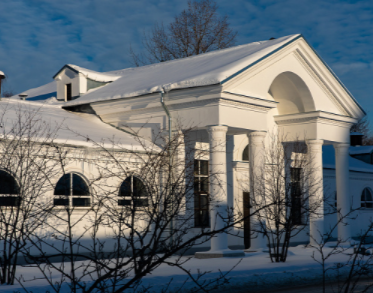

|  |
Школа пекарей Один из трех павильонов экспозиции «Коневодство», сейчас находится на стадии капитального ремонта, по завершении которого здесь разместится Школа пекарей. Павильон построен в 1954 году, архитектор — М.М. Титов. До 1990 года — «Коневодство», с 1990 года — «Хлебопродукты». Закрыт на капитальный ремонт. В 2021 году в павильоне откроется Школа пекарей. |